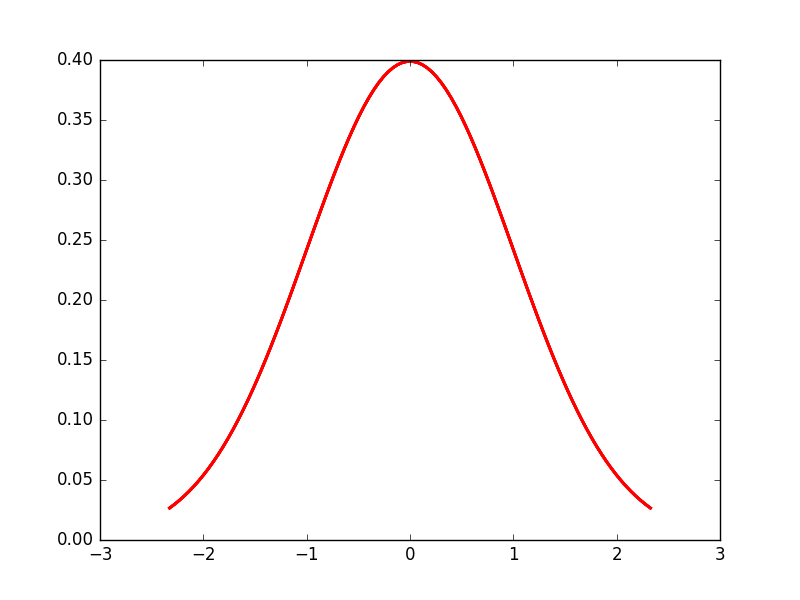

To use numpy you need to import the module
import numpy as np print("Numpy version {:}".format(np.__version__))
Numpy version 1.11.0
There are a number of ways to initialize new numpy arrays, for example from
# a vector: the argument to the function is a Python list v = np.array([1, 2, 3, 4]) print(v)
>>> [1 2 3 4]
# a matrix: the argument to the function is a nested Python list M = np.array([[1, 2], [3, 4]]) print(M)
>>> [[1 2] [3 4]]
print(type(v), type(M))
(<type 'numpy.ndarray'>, <type 'numpy.ndarray'>)
The difference between the v and M arrays is only their shapes. The information
about the shape of an array by using the ndarray.shape property.
print(v.shape, M.shape)
((4,), (2, 2))
So far the numpy.ndarray looks similar to a Python list (or nested
list). Why do we need numpy arrays?
Using the ndarray.dtype (data type) property, we can see the type of an array:
print(v.dtype, M.dtype)
(dtype('int64'), dtype('int64'))
We get an error if we try to assign a value of an uncastable type to an element in a Numpy array:
M[0, 0] = "hello"
Traceback (most recent call last): File "<stdin>", line 1, in <module> ValueError: invalid literal for long() with base 10: 'hello'
The type defined at the initialization won't be changed automatically.
M[0, 0] = 1.2345 print(M[0, 0], M.dtype)
(1, dtype('int64'))
However, the data type can be changed later if it is desired (e.g. using numpy.ndarray.astype).
x = M.astype(np.float32) print(x, x.dtype)
(array([[ 1., 2.],
[ 3., 4.]], dtype=float32), dtype('float32'))
If we want, we can explicitly define the data type of the array during creation,
using the dtype keyword argument.
M = np.array([[1, 2], [3, 4]], dtype=np.complex) print(M)
[[ 1.+0.j 2.+0.j] [ 3.+0.j 4.+0.j]]
Common dtypes are:
np.int8 |
np.int16 |
np.int32 |
np.int64 |
np.uint32 |
np.uint64 |
np.float32 |
np.float64 |
np.bool |
np.object |
np.uint16 |
np.complex |
For larger arrays it is unpractical to initialize the data manually, using explicit python lists. Instead we can use one of the many functions in Numpy that generate arrays of different forms. Some of the more common ones are:
Ones and Zeros
Numerical ranges
Random numbers
np.random.rand, np.random.randn
Building matrices
np.identity, np.diag, np.tri, np.tril, p.triu
From existing data
x = np.zeros(3, dtype=np.int) print(x)
[0 0 0]
x = np.ones((3, 3), dtype=np.float) print(x)
[[ 1. 1. 1.] [ 1. 1. 1.] [ 1. 1. 1.]]
# creates a range, arguments: [start=0], stop, [step=1] x = np.arange(10) print(x)
>>> [0 1 2 3 4 5 6 7 8 9]
x = np.arange(2, -1, -0.5) print(x)
[ 2. 1.5 1. 0.5 0. -0.5]
# using linspace, both end points ARE included. [start, stop, n_steps] x = np.linspace(0, 10, 11) print(x)
>>> [ 0. 1. 2. 3. 4. 5. 6. 7. 8. 9. 10.]
x = np.logspace(0, 10, 11, base=10) print(x)
[ 1.00000000e+00 1.00000000e+01 1.00000000e+02 1.00000000e+03 1.00000000e+04 1.00000000e+05 1.00000000e+06 1.00000000e+07 1.00000000e+08 1.00000000e+09 1.00000000e+10]
# each element is from the uniform random distribution [0,1] x = np.random.rand(5, 5) print(x)
>>> [[ 0.47215535 0.27251754 0.05121048 0.08544974 0.81382862] [ 0.23058358 0.80483556 0.89060654 0.87348886 0.43790602] [ 0.63840717 0.36768173 0.14509201 0.1821502 0.5258744 ] [ 0.73406159 0.10927792 0.01798686 0.79958206 0.25066469] [ 0.97962274 0.27409317 0.50300234 0.47608284 0.49572095]]
The standard normal distribution is available as np.random.randn
x = np.diag([1, 2, 3]) # the diagonal of an otherwise zero matrix print(x)
[[1 0 0] [0 2 0] [0 0 3]]
y = np.diag(x) print(y)
[1 2 3]
# ones at and below the given diagonal and zeros elsewhere x = np.tri(3) print(x)
>>> [[ 1. 0. 0.] [ 1. 1. 0.] [ 1. 1. 1.]]
# Upper triangle of an array. x = np.triu(np.ones((3, 3))*2) print(x)
>>> [[ 2. 2. 2.] [ 0. 2. 2.] [ 0. 0. 2.]]
M = np.ones((3, 3), dtype=np.uint8) * 21 print(M.dtype) M.itemsize # bytes per element
uint8 1
M.nbytes # number of bytes
9
M.ndim # number of dimensions
2
Array indexing refers to any use of [] to index array values.
# v is a vector, and has only one dimension, taking one index v = np.arange(10) print(v) print(v[0], v[-2])
>>> [0 1 2 3 4 5 6 7 8 9] (0, 8)
Unlike lists and tuples, Numpy arrays support multidimensional indexing. That means that it is not necessary to first select a subarray and index it again.
[row, column] instead of [row][column].v.shape = (2, 5) print(v) # v is now a 2 dimensional array, taking two indices print(v[1, 4], v[1, 4]==v[1][4])
[[0 1 2 3 4] [5 6 7 8 9]] ... (9, True)
print(v[0])
[0 1 2 3 4]
The same thing can be achieved with using :
print(v[0, :]) print(v[:, 3])
[0 1 2 3 4] [3 8]
Slicing syntax like lists and strings [start:stop:step] but for multiple dimensions.
x = np.dstack([np.zeros(4),np.arange(1,5), np.zeros(4), np.arange(6,10)]).reshape(4,4) print(x) print(x[:, ::2]) # get the zeros
>>> [[ 0. 1. 0. 6.] [ 0. 2. 0. 7.] [ 0. 3. 0. 8.] [ 0. 4. 0. 9.]] [[ 0. 0.] [ 0. 0.] [ 0. 0.] [ 0. 0.]]
print(x) print(x[:-2]) print(x[1:4:2, 1:4:2])
[[ 0. 1. 0. 6.] [ 0. 2. 0. 7.] [ 0. 3. 0. 8.] [ 0. 4. 0. 9.]] [[ 0. 1. 0. 6.] [ 0. 2. 0. 7.]] [[ 2. 7.] [ 4. 9.]]
Slices of arrays do not copy the internal array data but produce new views of the original data.
x = np.arange(5) y = x[::2] print(x) print(y) y[0] = 3 print(x) print(y)
>>> [0 1 2 3 4] [0 2 4] >>> [3 1 2 3 4] [3 2 4]
Making changes to the view changes the underlying array!
Arrays can be indexed with other arrays to select elements into new arrays.
Index arrays are a very powerful tool.
Indexing an array returns a copy of the original data, not a view.
x = np.arange(10, 1, -1) y = x[np.arange(0, 8, 2)] print(x) print(y) y[0] = 55 print(x) print(y)
>>> [10 9 8 7 6 5 4 3 2] [10 8 6 4] >>> [10 9 8 7 6 5 4 3 2] [55 8 6 4]
Boolean index arrays are used to decide for each element if it should be in the output array. So they must have the same shape as array being indexed.
y = np.arange(10) b = y > 5 print(b) print(y[b], y[y < 5], y[(y>6) & (y!=9)])
>>> [False False False False False False True True True True] (array([6, 7, 8, 9]), array([0, 1, 2, 3, 4]), array([7, 8]))
Index arrays may be combined with slices. For example:
y = np.arange(64).reshape(8, 8) print(y) print(y[np.array([0,2,4]),1:3])
[[ 0 1 2 3 4 5 6 7] [ 8 9 10 11 12 13 14 15] [16 17 18 19 20 21 22 23] [24 25 26 27 28 29 30 31] [32 33 34 35 36 37 38 39] [40 41 42 43 44 45 46 47] [48 49 50 51 52 53 54 55] [56 57 58 59 60 61 62 63]] [[ 1 2] [17 18] [33 34]]
Likewise, slicing can be combined with broadcasted boolean indices:
b = y < 13 print(y) print(y[1:3, b[1, :]])
[[ 0 1 2 3 4 5 6 7] [ 8 9 10 11 12 13 14 15] [16 17 18 19 20 21 22 23] [24 25 26 27 28 29 30 31] [32 33 34 35 36 37 38 39] [40 41 42 43 44 45 46 47] [48 49 50 51 52 53 54 55] [56 57 58 59 60 61 62 63]] [[ 8 9 10 11 12] [16 17 18 19 20]]
Array shapes in expressions or assignments must be compatible. The np.newaxis
object adds dimension, np.squeeze removes dimensions of size 1
y = np.ones((2, 2)) print(y, y.shape) print(y[:,:, np.newaxis], y[:,:, np.newaxis].shape) print(np.squeeze(y), np.squeeze(y).shape)
(array([[ 1., 1.],
[ 1., 1.]]), (2, 2))
(array([[[ 1.],
[ 1.]],
[[ 1.],
[ 1.]]]), (2, 2, 1))
(array([[ 1., 1.],
[ 1., 1.]]), (2, 2))
Vectorizing code is the key to writing efficient numerical calculation with Python/Numpy. That means that as much as possible of a program should be formulated in terms of matrix and vector operations, like matrix-matrix multiplication.
We can use the usual arithmetic operators to multiply, add, subtract, and divide arrays with scalar numbers.
v = np.arange(5) print(v * 2, v + 3, v / 2., v - 5)
(array([0, 2, 4, 6, 8]), array([3, 4, 5, 6, 7]), array([ 0. , 0.5, 1. , 1.5, 2. ]), array([-5, -4, -3, -2, -1]))
When we add, subtract, multiply and divide arrays with each other, the default behaviour is element-wise operations:
m = np.arange(9).reshape(3, 3) v = np.arange(3) print(m * m) print(m ** 3) print(m * v)
>>> [[ 0 1 4] [ 9 16 25] [36 49 64]] [[ 0 1 8] [ 27 64 125] [216 343 512]] [[ 0 1 4] [ 0 4 10] [ 0 7 16]]
We can either use the np.dot function, which applies a matrix-matrix, matrix-vector, or inner vector multiplication to its two arguments:
print(np.dot(m, v))
[ 5 14 23]
For 2-D arrays it is equivalent to matrix multiplication, and for 1-D arrays to inner product of vectors.
Alternatively, we can cast the array objects to the type np.matrix. This changes the behavior of the standard arithmetic operators +, -, * to use matrix algebra.
M = np.matrix(m) vec = np.matrix(v).T # make it a column vector print(M * vec)
>>> [[ 5] [14] [23]]
More examples
# inner product print(np.dot(v, v)) print(vec.T * vec)
5 [[5]]
# with matrix objects, standard matrix algebra applies print(vec + M * vec)
[[ 5] [15] [25]]
Inverse: np.linalg.inv
M = np.matrix([[4, 2, 9], [11, 2, 3], [9, 3, 1]]) print(np.linalg.inv(M))
[[-0.05035971 0.17985612 -0.08633094] [ 0.11510791 -0.55395683 0.62589928] [ 0.10791367 0.04316547 -0.10071942]]
Determinant: np.linalg.det
print(np.linalg.det(M))
139.0
Exponents and logarithms, trigonometric functions
Linear algebra
Handling complex numbers
Floating functions, and miscellaneous
Often it is useful to store datasets in Numpy arrays. Numpy provides a number of functions to calculate statistics of datasets in arrays.
x = np.arange(10) print(np.sum(x))
45
print(np.mean(x))
4.5
print(np.var(x))
8.25
The shape of an Numpy array can be modified without copying the underlaying data, which makes it a fast operation even for large arrays.
x = np.arange(24) print(x)
[ 0 1 2 3 4 5 6 7 8 9 10 11 12 13 14 15 16 17 18 19 20 21 22 23]
v = np.reshape(x, (4, 6)) print(v)
[[ 0 1 2 3 4 5] [ 6 7 8 9 10 11] [12 13 14 15 16 17] [18 19 20 21 22 23]]
v = np.array([[0, 1], [2, 3]]) x = np.resize(v, (1,4)) print(x)
>>> [[0 1 2 3]]
Using function np.repeat, np.tile, np.vstack, np.hstack, and np.concatenate we can create larger vectors and matrices from smaller ones:
v = np.array([[1, 2], [3, 4]]) # repeat each element 3 times print(np.repeat(v, 3))
... [1 1 1 2 2 2 3 3 3 4 4 4]
# tile the matrix 3 times print(np.tile(v, 3))
[[1 2 1 2 1 2] [3 4 3 4 3 4]]
v = np.array([[0, 1], [2, 3]]) w = np.array([[5, 6]]) print(np.concatenate((v, w), axis=0))
>>> [[0 1] [2 3] [5 6]]
print(np.concatenate((v, w.T), axis=1))
[[0 1 5] [2 3 6]]
v = np.array([[0, 1], [2, 3]]) w = np.array([[5, 6]]) x = np.vstack((v, w)) print(x)
>>> >>> [[0 1] [2 3] [5 6]]
x = np.hstack((v, w.T)) print(x)
[[0 1 5] [2 3 6]]
Assignments in Python usually do not copy the underlaying objects to avoid unnecessary memory usage (technical term: pass by reference).
A = np.array([[1, 2], [3, 4]]) # now B is referring to the same array data as A B = A # changing B affects A B[0, 0] = 10 print(A)
... >>> ... >>> [[10 2] [ 3 4]]
print(B)
[[10 2] [ 3 4]]
To get a new completely independent object B copied from A we can use the
copy function:
A = np.array([[1, 2], [3, 4]]) B = A.copy() # now, if we modify B, A is not affected B[0, 0] = -5 print(A)
>>> ... >>> [[1 2] [3 4]]
print(B)
[[-5 2] [ 3 4]]
Generally, we want to avoid iterating over the elements of arrays. Iterations are really slow compared to vectorized operations.
v = np.array([1,2,3,4]) for element in v: print(element)
... ... 1 2 3 4
np.whereThe position index can be found using the np.where function
x = np.arange(10) + 20 indices = np.where((x >= 22) & (x < 27)) print(indices)
>>> (array([2, 3, 4, 5, 6]),)
print(x[indices])
[22 23 24 25 26]
np.where cont.np.where can also be used to choose from one of two arrays
x = np.arange(10) + 20 y = np.arange(10) z = np.where((x >= 22) & (x < 27), x, y) print(z)
>>> >>> [ 0 1 22 23 24 25 26 7 8 9]
np.chooseConstructs an array by picking elements form several arrays using np.choose
which = [1, 0, 1, 0] choices = [[-2, -2, -2, -2], [5, 5, 5, 5]] x = np.choose(which, choices) print(x)
>>> >>> [ 5 -2 5 -2]
np.takeTake elements from an array along an axis (for completeness, the function np.take does the same thing as "fancy" indexing (i.e. indexing arrays using arrays); however it can be easier to use if you need elements along a given axis.
v = np.array([4, 3, 5, 7, 6, 8]) indices = np.array([0, 1, 4]) x = np.take(v, indices) print(x) print(v[indices])
>>> >>> [4 3 6] [4 3 6]
np.selectReturn an array drawn from elements in choicelist, depending on conditions using np.select.
x = np.arange(10) condlist = [x<3, x>5] choicelist = [x, x**2] v = np.select(condlist, choicelist, default=9999) print(v)
>>> >>> >>> [ 0 1 2 9999 9999 9999 36 49 64 81]
np.placeChange elements of an array based on conditional and input values using np.place.
m = np.arange(6).reshape(2, 3) print(m) np.place(m, m>2, [4, 55]) print(m)
[[0 1 2] [3 4 5]] >>> [[ 0 1 2] [ 4 55 4]]
The Numpy reference manual gives details on functions, modules, and objects included in Numpy, describing what they are and what they do.
Scipy (Scientific Computing Tools for Python) is a Python-based ecosystem of open-source software for mathematics, science, and engineering. In particular, these are some of the core packages:
The Scipy library is one of the core packages that make up the Scipy stack. It provides many user-friendly and efficient numerical routines such as routines for numerical integration and optimization.
There are several general interpolation facilities available in Scipy, for data in 1, 2, and higher dimension
from scipy.interpolate import interp1d x = np.linspace(0, 10, 10) y = np.cos(-x**2 / 8.0) f = interp1d(x, y, kind='cubic') print(y[:4])
>>> >>> >>> [ 1. 0.98811613 0.81545357 0.18090587]
print(f(x)[:4])
[ 1. 0.98811613 0.81545357 0.18090587]
This module contains a large number of probability distributions as well as a growing library of statistical functions. There are several general
from scipy.stats import norm # The probability density function for norm is: # norm.pdf(x) = exp(-x**2/2)/sqrt(2*pi) # Calculate a few first moments mean, var, skew, kurt = norm.stats(moments='mvsk') print(mean, var, skew, kurt)
>>> ... ... >>> ... >>> (array(0.0), array(1.0), array(0.0), array(0.0))
import numpy as np import matplotlib.pyplot as plt x = np.linspace(norm.ppf(0.01), norm.ppf(0.99), 100) plt.plot(x, norm.pdf(x), 'r-', lw=2) plt.savefig('./graphics/norm_pdf.png')
